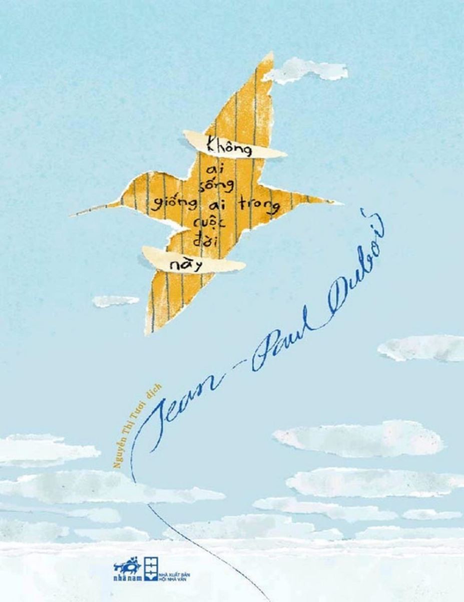

« Back
Không Ai Sống Giống Ai Trong Cuộc Đời Này
By Jean-Paul Dubois

Giới Thiệu
1. Nhà Tù Bên Sông
2. Skagen, Nhà Thờ Vùi Trong Cát
3. Vị Mục Sư Ngờ Vực
4. Độ Sâu Của Những Cổ Họng
5. Thetford Mines
6. Và Cây Đàn Organ Ngừng Chơi
7. Montréal, QC
8. Chiếc Beaver Của Winona
9. Ngay Trước Bóng Tối
10. Máy Bay, Máy Kéo
11. Trở Lại Skagen